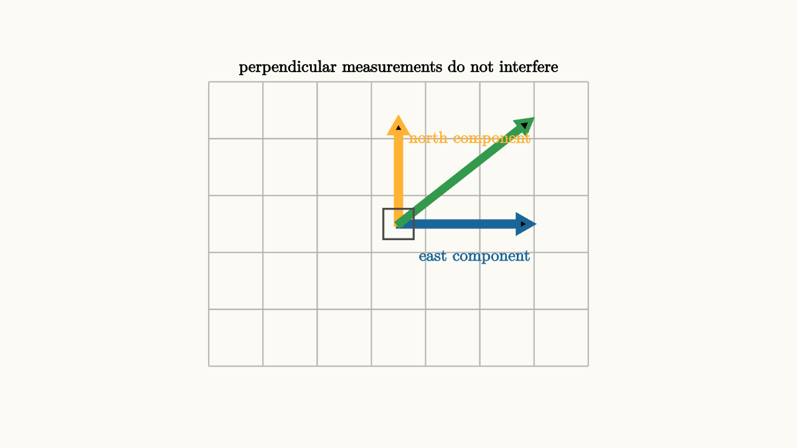

Orthogonality Is Independent Information
Two directions are orthogonal when their dot product is zero:
In the plane, this means the directions meet at a right angle. In higher dimensions, the picture is harder to draw, but the meaning stays useful: measuring along one direction gives no measurement along the other.
If you walk east, your north coordinate stays unchanged. East and north are independent pieces of information. A movement of $3$ units east and $2$ units north can be read without interference because the axes are orthogonal.

source
background = [0.985, 0.98, 0.955, 1]
camera = Camera(4.2b)
mesh diagram = block {
. stroke{LIGHT_GRAY, 1.2} LineGrid([-2, 2, 8], [-1.5, 1.5, 6], 1)
. stroke{BLUE, 5} Arrow(start: [0, 0, 0], end: [1.4, 0, 0])
. stroke{ORANGE, 5} Arrow(start: [0, 0, 0], end: [0, 1.1, 0])
. stroke{GREEN, 4} Arrow(start: [0, 0, 0], end: [1.4, 1.1, 0])
. fill{CLEAR} stroke{DARK_GRAY, 2} Rect([0.32, 0.32])
. center{[0.8, -0.35, 0]} color{BLUE} Text("east component", 0.62)
. center{[0.75, 0.9, 0]} color{ORANGE} Text("north component", 0.62)
. center{[0, 1.65, 0]} color{BLACK} Text("perpendicular measurements do not interfere", 0.62)
}The dot product measures how much two vectors point in the same direction:
When $\theta=90^\circ$, $\cos\theta=0$, so the dot product is zero. When the angle is small, the dot product is large and positive. When the angle is obtuse, the dot product becomes negative.
This makes orthogonality more than a geometric decoration. It is a test for unrelated components. If a vector $w$ is written as
and $u$ and $v$ are orthogonal unit vectors, then
Each dot product reads one coordinate without picking up the other coordinate.
When the basis vectors have length other than $1$, the reading needs one extra division. If $u$ and $v$ are orthogonal but $u$ has length $5$, then
contains a factor of $|u|^2=25$. The coordinate along $u$ is
This is the same expression that appears in projection. Orthogonality removes cross-talk, and the denominator adjusts for the ruler length.
source
background = [0.985, 0.98, 0.955, 1]
camera = Camera(4.6b)
let Scene = |tilt| block {
let u = [1.35, 0, 0]
let v = [0.35 * tilt, 1.1, 0]
let w = u + v
. stroke{LIGHT_GRAY, 1.1} LineGrid([-2, 2, 8], [-1.5, 1.5, 6], 1)
. stroke{BLUE, 4.5} Arrow(start: [0, 0, 0], end: u)
. stroke{ORANGE, 4.5} Arrow(start: [0, 0, 0], end: v)
. stroke{GREEN, 4.5} Arrow(start: [0, 0, 0], end: w)
. center{[0, 1.7, 0]} color{BLACK} Text(if (tilt < 0.1) { "dot products read clean coordinates" } else { "tilted axes mix the readings" }, 0.62)
}
"orthogonal axes"
mesh scene = Scene(tilt: 0.0)
play Write(0.8)
"tilt one axis"
scene = Scene(tilt: 1.0)
play Lerp(1.1)
"restore independence"
scene = Scene(tilt: 0.0)
play Lerp(1.1)This idea scales to functions. Two signals can be orthogonal if their inner product is zero:
Sine and cosine waves of matching frequency are orthogonal over a full period. That is why Fourier series can separate a signal into independent wave components. Each wave carries a piece of information that the others do not duplicate.
Orthogonal bases are prized because they make coordinates simple. If
are orthonormal, meaning each has length $1$ and different ones are orthogonal, then the coordinate of a vector $x$ along $q_i$ is just
No system of equations is needed. Each coordinate can be read directly.
This is also why the Pythagorean theorem generalizes cleanly. If $u$ and $v$ are orthogonal, then
The cross term disappears because
and $u\cdot v=0$.
Orthogonality is the geometry of separation. It lets us measure one component without contaminating it with another. In linear algebra, that makes projections, least squares, Fourier analysis, and data compression feel like versions of the same move: find directions that carry separate information, then read the coordinates with dot products.
There is a helpful contrast with independence. Two vectors can be linearly independent without being orthogonal. The directions
span the plane, but their measurements interfere. A vector's coordinate in one direction affects its dot product with the other. Orthogonality is a stronger condition. It gives independence plus clean measurement.
That is why the Gram-Schmidt process is so useful. Starting from independent vectors, it builds orthogonal ones that span the same subspace. The span stays the same, so no reachable vectors are lost. The measuring frame becomes cleaner, so projections and coordinates become easier.
In data language, orthogonal features avoid duplicate measurement. If two columns of a data matrix are orthogonal after centering and scaling, knowing one feature's value gives no linear contribution to the other feature's dot-product measurement. In geometry language, the shadows fall in separate directions. In signal language, two waveforms carry separate channels. The mathematical condition is the same:
That compact equation says the two directions can be read independently.